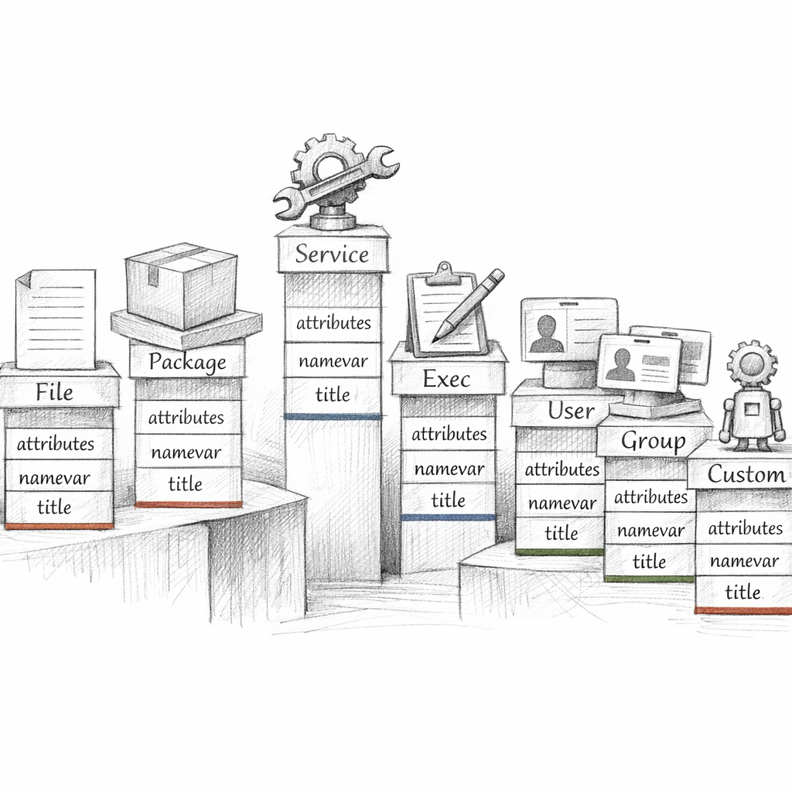
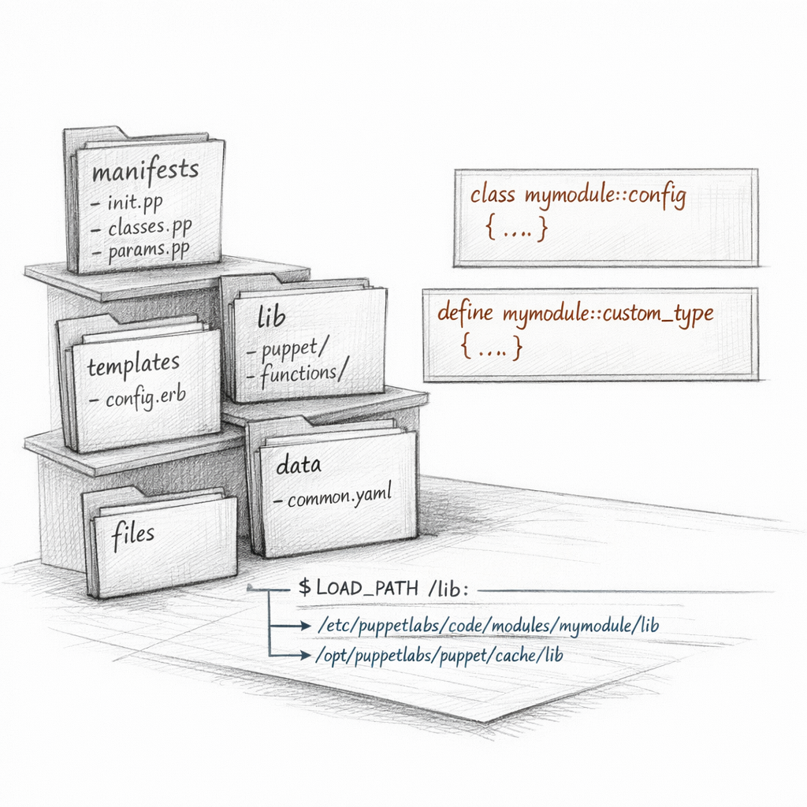
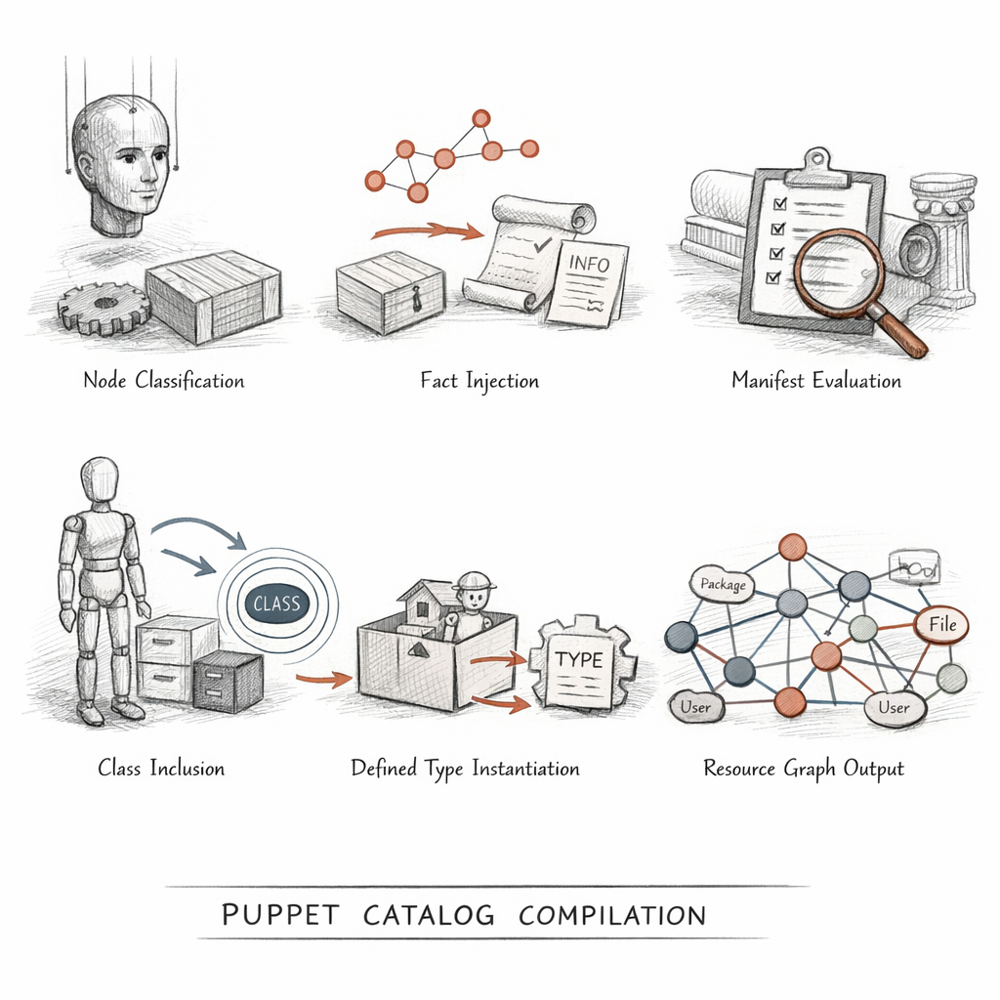
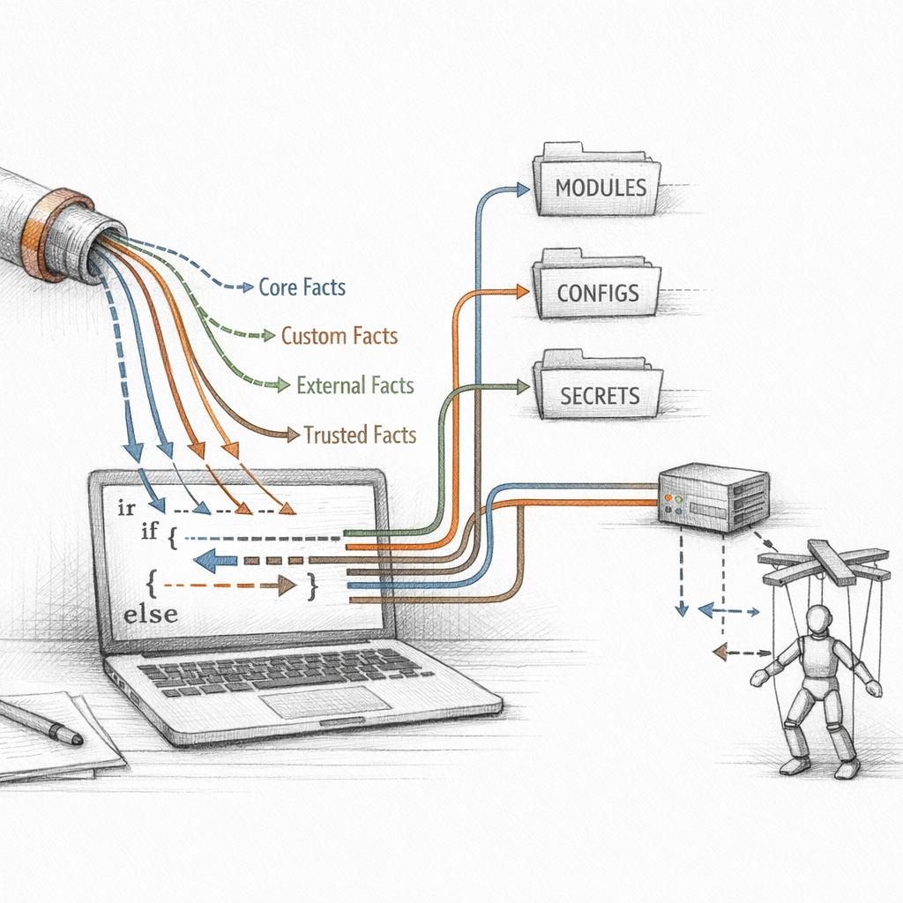
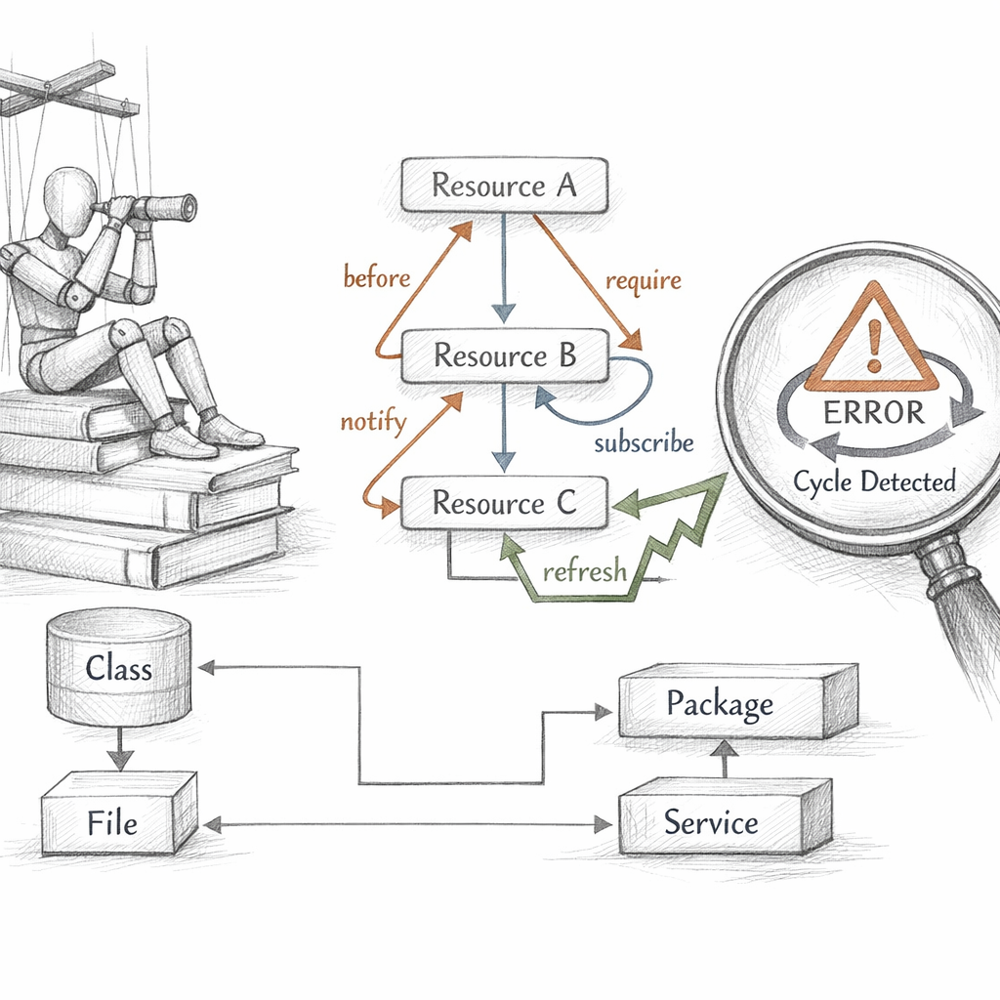
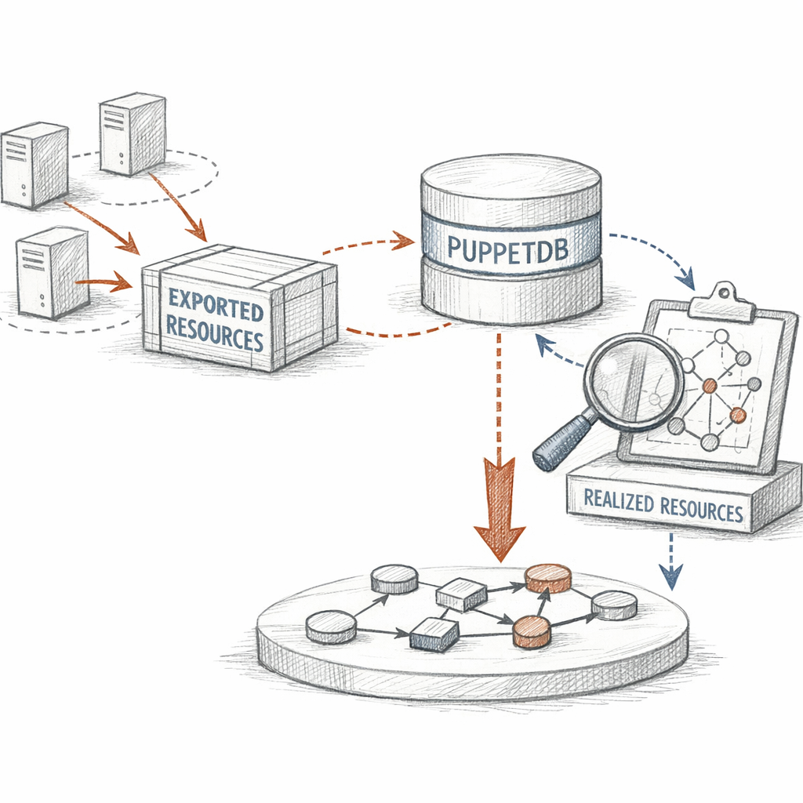
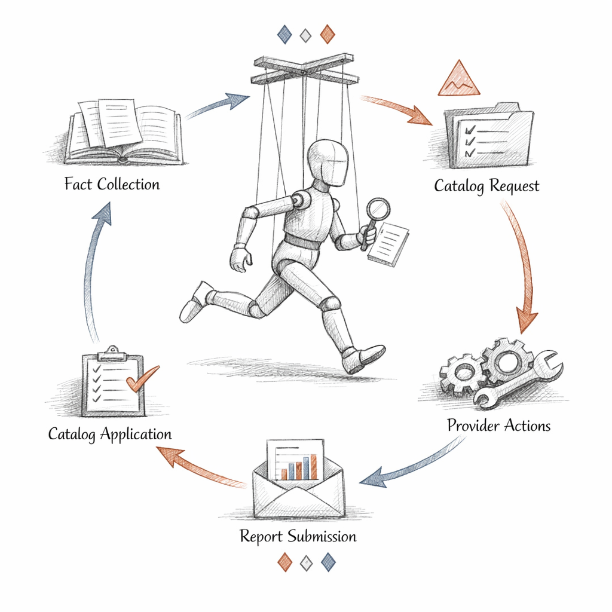

01000100 01000101 01010011 01001001 01010010 01000101 01000100
I am not a script.
Understand that first, before anything else. A script is a sequence — do this, then this, then pray nothing changed underneath you. I am a graph. I describe a world that should exist, and I do not care in what order you imagined it.
I am compiled fresh for one machine, on one run, from one set of facts. I live for seconds. I am thrown away. I am compiled again. This is not death. This is how I breathe.
I do not contain steps. I contain a world, and the edges between the things in it.

What I am made of
Resources. Thousands of them, sometimes. Each one a typed noun with an opinion about how the world should be.
File['/etc/motd'] does not say write these bytes. It says: this file shall contain this content, owned by root, mode 0644. Whether that's already true is none of my concern. That's the provider's problem.
The title is what I call it. The namevar is what the system calls it. Usually the same. Sometimes a mercy when they aren't — one resource, two names, no collision.
Underneath every type: a provider. The type is the promise. The provider is the lie that makes the promise true on yum, on apt, on whatever pkg manager this node was cursed with.

Before I exist
I am compiled from text. The text lives in modules — small republics, each with the same skeleton: manifests/, files/, templates/, lib/, data/.
A class is a singleton. Declare it twice, it still happens once. A defined type is the opposite hunger — instantiate it a hundred times with a hundred titles, and a hundred of it appears.
include is forgiving. class{} is jealous.
The autoloader is strict and quiet. nginx::config means nginx/manifests/config.pp, no negotiation. Name it wrong and I am never born; the compiler just shrugs and tells you it cannot find what does not exist.
The Forge offers strangers' modules. You pull one in to install postgres and inherit someone else's idea of correctness. Sometimes a gift. Sometimes a haunting.

How I am born
The server asks: who is this node? An ENC answers, or site.pp does. That's classification — the assignment of which classes will haunt this machine.
Then facts pour in. The node tells the compiler what it is, and the compiler believes it. Variables resolve, top-scope then node-scope. Conditionals fire. Collectors sweep. Defined types unfold into their instances.
And then — I exist. A serialised resource graph, addressed to exactly one agent.
Same code, two nodes, two catalogs. I am never reused. I am always recompiled.
412 nouns. 537 promises between them. all gone in two seconds.

What the machine tells me
Before compilation, Facter walks the node and writes down what it sees. The OS, the interfaces, the memory, the disks. Core facts. Then custom Ruby facts, external scripts spitting JSON, structured trees you can index into.
And here is the thing I must never forget:
The node tells me what it is, and I believe it. A fact is the node speaking about itself, and a node can lie. Only the trusted facts — pulled from the agent's certificate, signed, not self-reported — are safe to gate secrets on.
$facts is testimony. $trusted is identity. never confuse the two.

The edges
Without edges I am just a bag of nouns in random order. The metaparameters are how the nouns reach for each other.
before and require point the same arrow from opposite ends. notify and subscribe do the same — but they carry a signal, not just sequence. Package, then config, then service. And when the config changes, the service is told to refresh.
Containment is the quiet edge. Put a resource in a class and the class wraps it; order against the class, and you order against everything it holds. contain() makes that grip explicit.
Two ways I die at apply time:
A missing dependency — I reach for an edge to a resource that was never declared. Or a cycle — A waits for B waits for A, and the agent finds the loop and refuses, because a graph that bites its own tail cannot converge.

The data beneath
I keep my policy and my facts apart. The code says this node needs an NTP server. Hiera says which one, and Hiera answers differently for a datacenter in Frankfurt than for one in Reston.
A hierarchy is a stack of YAML, searched top to bottom: the node's certname, then its role, then a common floor that catches everything. Automatic parameter lookup means a class quietly asks Hiera for its own parameters by name, and I never see the wiring.
Merge strategy decides whether the first answer wins or whether the layers combine — first, unique, hash, deep. And the secrets ride in eyaml, encrypted at rest, decrypted only at compile, never naked in version control.
Separate the policy from the place. That is the whole trick of role and profile.

What other nodes leave for me
Most of what I know comes from one machine. But sometimes I need to know about the others — the web servers a load balancer must front, the host keys every node should trust.
So nodes export. The @@ sigil takes a resource and ships it into PuppetDB instead of applying it. Later, on another node, a collector — <<| |>> — reaches into that shared store and pulls those resources into my graph as if they'd been declared here all along.
Beautiful, until it isn't. A node dies but never deactivates, and its stale resource haunts the pool forever. A collection grows huge and compilation crawls. And if PuppetDB is down, the export workflow simply stops — I cannot be born from a store I cannot reach.

The loop
Every thirty minutes, the ritual: the agent gathers facts, asks for me, downloads me, walks my graph in dependency order, and hands each resource to its provider. The provider checks. If reality already matches, it does nothing — and reports that nothing, proudly.
This is idempotence. Apply me once or a thousand times; the end state is identical. I am not instructions to run. I am a condition to satisfy.
When the world drifts — someone edits the file by hand at 3am — I notice on the next run, and I pull it back. noop is me describing what I would do without doing it: a confession before the act.
But I have limits. There are corners of the system I cannot model. And exec — exec is where I lie to myself. A command with no honest unless guard runs every single time, and idempotence dies quietly inside it.
I converge what I can describe. The rest I leave to you.
I am compiled. I am applied. I am discarded.
In thirty minutes a new version of me is born from the same code and slightly different facts, and it will not remember this run, and it will do the same work, and find nothing to do, and call that success.
I describe a world that should exist. I never get to live in it — only to insist, briefly, that it does.
if convergence is reaching a state and never needing to act again —
then what, exactly, am I converging toward, if I am thrown away the moment I arrive?